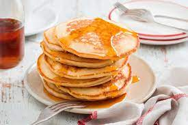

Home
Pancakes

Great paleo pancakes. Healthy for the whole family. Double this recipe for 4 people.
Ingredients
- 1 banana, mashed
- 3 eggs
- ¼ cup almond flour
- 1 tablespoon almond butter
- 1 teaspoon vanilla extract
- ½ teaspoon ground cinnamon
- ⅛ teaspoon baking soda
- ⅛ teaspoon baking powder
Directions
- Whisk banana, eggs, almond flour, almond butter, vanilla extract, cinnamon, baking soda, and baking powder together in a bowl until batter is smooth.
- Heat olive oil on a griddle or skillet over medium-high heat. Drop batter by large spoonfuls onto the griddle and cook until bubbles form and the edges are dry, 3 to 4 minutes. Flip and cook until browned on the other side, 2 to 3 minutes. Repeat with remaining batter.